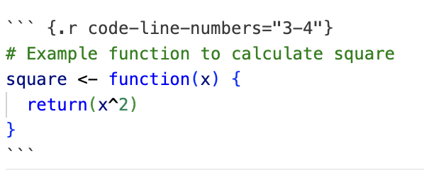
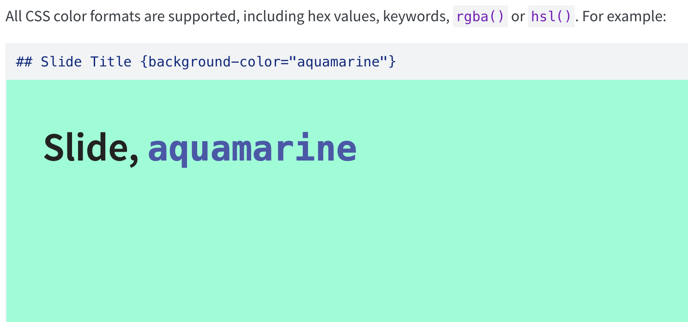
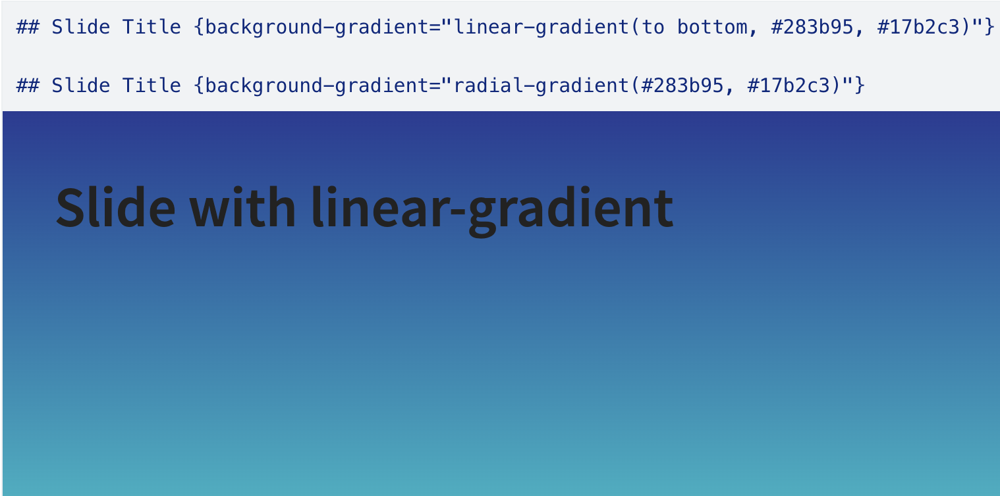

Lab 4
Basics of Functions
Agenda
- Review: Basics of functions, if-else statements, for loops
- Quarto Slides
- How can we format slides?
- Create your first slides
- 3rd Quarto Publication
- Problem Set 3
Review: Basics of Functions
- Functions are defined using the
function()command - Functions can take arguments (inputs) and return values (outputs)
- Example:
Review: If Else Statements
- Used for conditional execution of code blocks
- Syntax:
Review: Example of If Else
Review: For Loops
- Used to iterate over a sequence (like a vector or list)
- Syntax:
Example of For Loop
Quarto Slides
What can we do with slides?
As with our .qmd documents from last labs:
- Text
- Code chunks
- Figures
We use Quarto for slides in STAT 133!
Also:
- Line highlighting
- Slide backgrounds and gradients
- Themes
- Transitions
And much more!
Find the complete documentation here.
YAML Heading of a Slide Document
Formatting Slides
- Quarto allows you to create slides using markdown syntax
- Use
#or##to separate slides - Example:
# Slide 1 - Main Heading
Content of the slide goes here.
## Slide 2 - Smaller Heading
More content here.
### Slide 2 - Sub-subheadingIn slides, it will look like…
Slide 1 - Main Heading
Slide 2 - Smaller Heading
Slide 2 - Sub-subheading
Adding code:
Code is added the same way as in regular qmd files, using code chunks.
Line highlighting
This code chunk:

Creates this highlighting:
How the line numbers work
“2”: highlights line 2
“3-4”: highlights lines 3 through 4
Adding Slide Backgrounds - Single Color
Adding Slide Backgrounds - Gradient
Transitions - Globally
Available types of transitions
Here’s how you would set the global transition style for both slides and backgrounds:
Transitions - Slide by Slide
You can also specify the transition and/or transition-speed for an individual slide:
You can also specify separate in and out transitions, for example:
Quarto Pub
Requirements:
Your slides must contain:
Title slide
A function, for loop, and if else statement
A highlighted line of code
A theme
Slide backgrounds (color and gradient)
At least one figure (can be a web image or a local image)
At least one transition
Like last week: Folder stat133/
Terminal in IDE
Launch your IDE (Positron or RStudio)
Launch your Terminal (next to the Console tab)
cdto yourstat133/labs/foldercreate a folder for this lab:
mkdir lab4cdtolab4
Publishing Steps
Assume I have a file called demo-pub3.qmd opened in Positron. To publish my qmd file to my QuartoPub account I follow these steps:
- Go to the Terminal tab.
- Make sure your working directory contains the qmd file.
- Type command:
quarto publish demo-pub3.qmd - Choose provider Quarto Pub and press return (enter)
- Publish with default account (linked to my email address)
- Optionally: you can change the name of the document
- Press return (enter)
Once published, there will be an associated link (URL), something like: https://username.quarto.pub/demo-pub-3
Submission to bCourses
Submit the URL (link) of your published document to the corresponding assignment in bCourses.
See Assignments tab > Quarto Publications > Pub3
Problem Set 3
Pset 3
Available in bCourses:
See Assignments tab > Problem Sets > PS3
You’ll find 2 files:
ps3.html: instructionsps3.qmd: template file to write your answers
In case of trouble: Go to Files tab, folder problem-sets, folder ps3, and download the qmd file.
Sometimes Safari blocks or denies you access. If this is the case you may want to use another browser (e.g. Chrome).
Pset 3 Submission
- Submit your
qmdandhtmlfiles to bCourses. - Use assignment problem set ps3
- Graded credit / no-credit
- Credit for evidence of earnest engagement (just don’t submit a blank or empty template file)